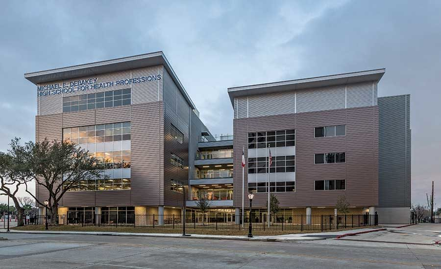

Determining how much funding a school gets is not reliant on one way, but rather a multitude of ways. However, a very large part of determining the funding of a school comes from the property tax of surrounding houses as this money is used for the school. This gives reason to the trend of seeing less renovated schools with old/used textbooks in poverty stricken neighborhoods.
A school whose surrounding houses have a median value of $96,495

A school whose surrounding houses have a median value of $827,768